斷更不倒扣，刪字城不縮
樓的高度只升不降；街燈記的是歷史最佳連寫，斷了也不滅。過去的頁定稿唯讀，永遠不會被「改壞」。城市等你回來，不催你。
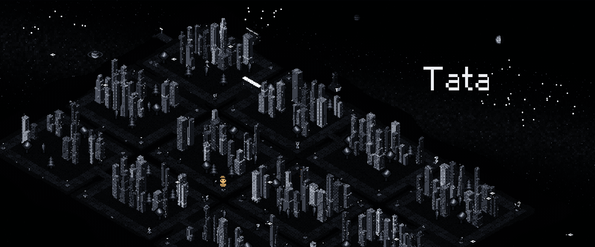
Concept
A pixel city grown from your journal: write a page each night and the words become a building. No server, no account — your words never leave your device.
Outcome
Solo-built and shipped in three and a half weeks: live as a PWA at tata.page, iOS build in App Store review. 220+ commits, 74 automated tests, $0 server cost.
Project Overview
Tata 是一個 local-first 的筆記城市：每晚寫一頁日記，字會變成一棟像素建築，寫得越多，城市越大。沒有伺服器、沒有帳號、不收集任何資料——字只存在使用者自己的裝置裡。
這是我第二個從概念做到上線的個人產品。跟 MELU 不同，這次的核心挑戰不在 AI 對話，而在「怎麼在完全沒有伺服器的前提下，把使用者最私密的字守好」——同步、合併、備份全部要在裝置端解決。
這是一個人規模、已上線並持續演進的產品。我負責產品概念、世界觀與角色（外太空夜城、Ash 和城裡十二種職業的居民）、遊戲機制（瓦特經濟、好感系統、不懲罰哲學）、UX 文案與全部台詞的語氣準則、像素美術方向，以及每一次架構決策的拍板與驗收——產品鐵律、否決權與品質標準始終在我手上。
Why Tata
日記是一個人最私密的東西，但多數日記 App 的第一步是「請先註冊」——你的字從第一個字開始就住在別人的伺服器上。我想反過來做：零伺服器、零帳號，字永遠留在使用者手上，而且是一般的 .md 純文字檔，隨時可以整包帶走。
這不是省事，是產品定位。代價是所有同步、合併、備份都得在裝置端解決——這正是後面最有工程含量的部分。至於要讓人每天回來寫，靠的不是推播轟炸，而是讓字看得見：每一頁，都會在城裡長成一棟樓。
這條定位也是一條界線：任何會把字送出裝置的功能——同步、分析、雲端——預設答案是不做。那是產品轉向，不是新功能。
Concept
城市的規則很簡單：一天一頁，一頁一棟樓，字數決定樓高；一個月是一座島，島與島之間以棧道相連。整座城只有三個顏色——黑、白、琥珀——琥珀留給使用者自己，永不販售。夜空裡的星座對應等級，月相是真實的月相。
城裡有十二種職業的居民：站長、園丁、信使、天文學家、麵包師⋯⋯每一位的身分終身固定，寫得夠久，他們會記得你的名字、記得你上次選過的回話。這些不是隨機的：居民的身分、今晚誰來請託，都是對日期做確定性計算的結果——換一台裝置重算，結果完全一樣。
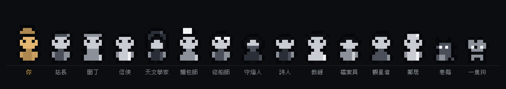
Opening Ritual
Tata 沒有任何一段教學文字。第一次打開，你收到的是一封封蠟的信；打開後鏡頭降臨到一座示範城市的路口，一位叫 Ash 的居民走過來跟你說話——怎麼寫字、怎麼看羅盤，都在對話裡學會。這是產品鐵律之一：能用角色和設計教的，就不寫說明。
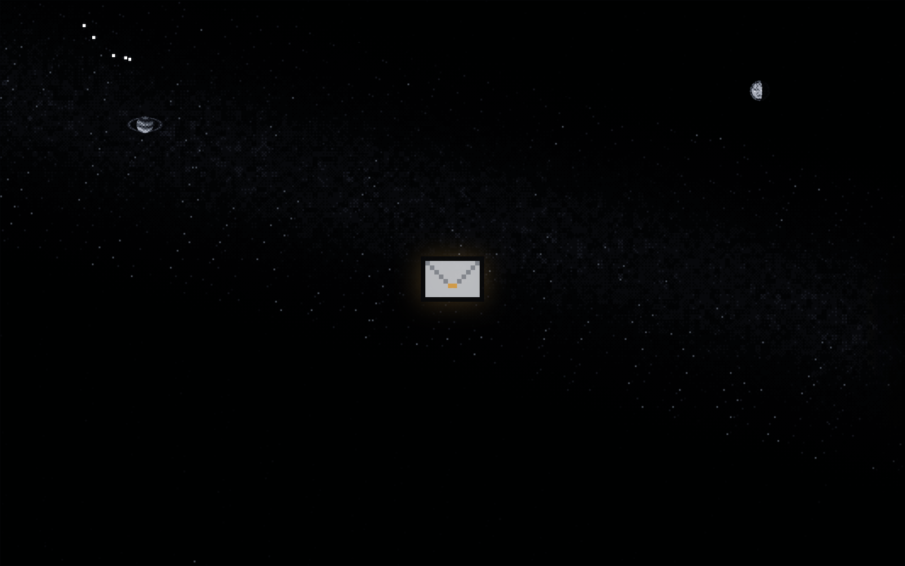
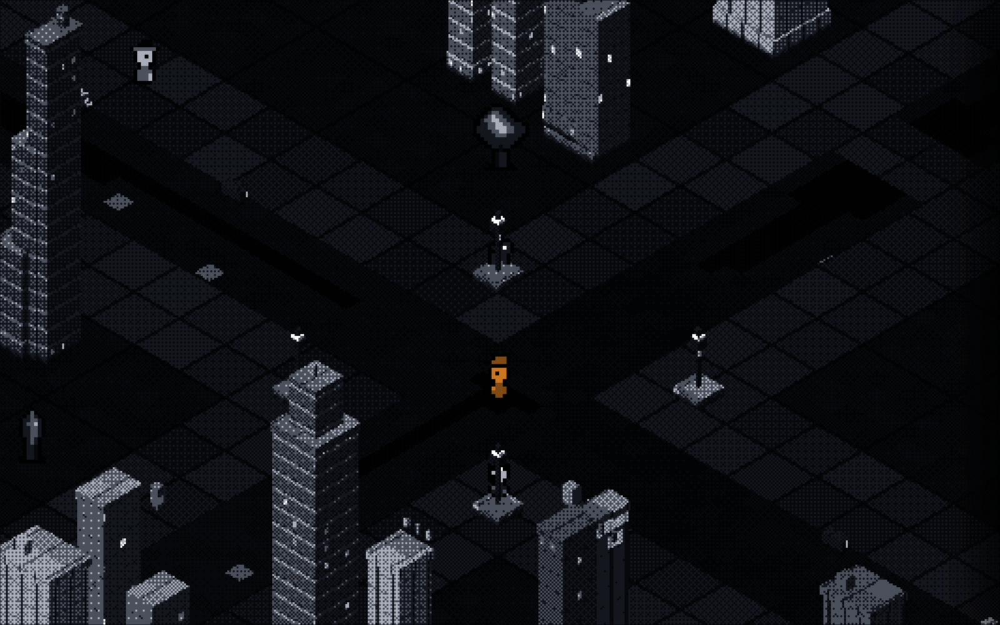
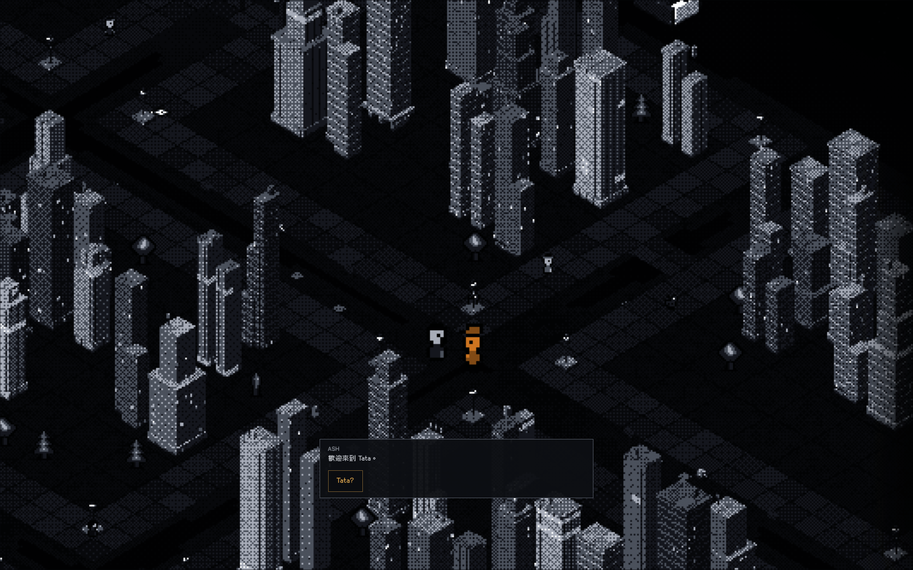
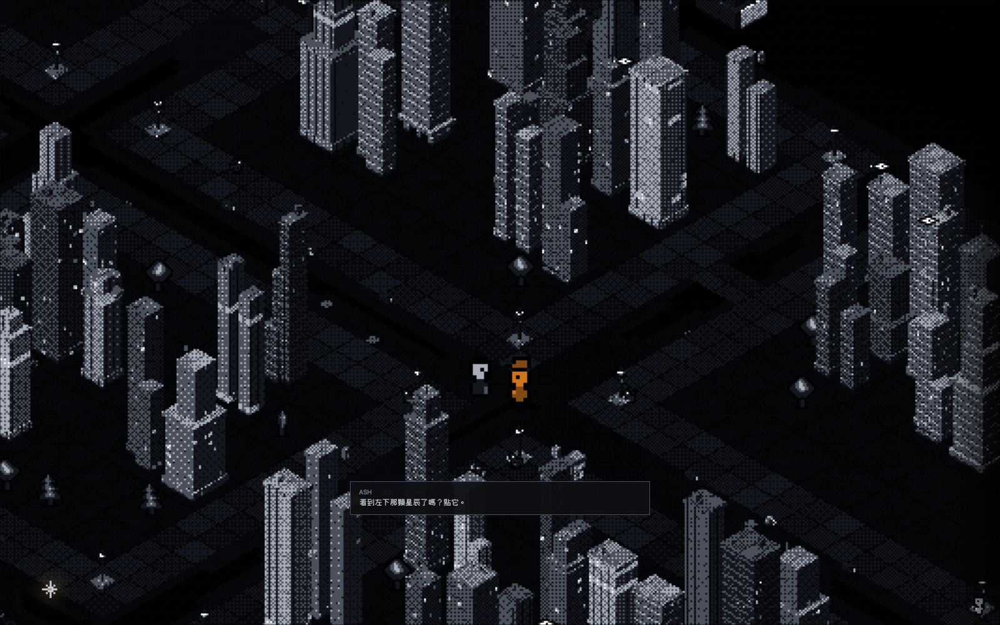

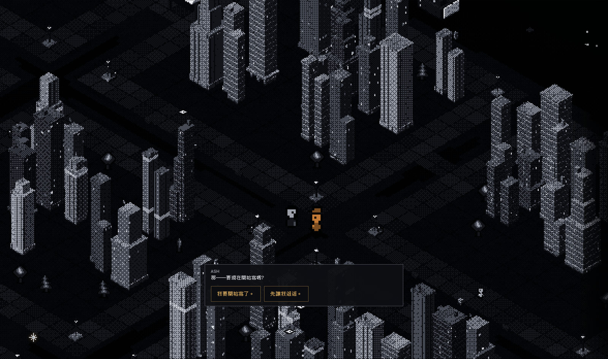
Product Rules
所有工程決策的上游，是幾條產品鐵律。它們不是風格偏好，而是每一次「這個功能該不該做」的判準。
樓的高度只升不降；街燈記的是歷史最佳連寫，斷了也不滅。過去的頁定稿唯讀，永遠不會被「改壞」。城市等你回來，不催你。
禮物系統做完之後我把它整組拆掉——因為送出去的禮物在城裡看不見。「作為裝飾城市的遊戲，這不成立。」換成每日限定的街邊小物：買了，就擺在城裡。
當一棟新樓要蓋在某個位置，那裡的裝飾自動退位。這座城的主體是字，其他東西都是配角——包括我花最多時間畫的那些小物。
自己每天用，才會發現的兩件事
問題：花瓦特買的樹出現在環城路上，像被隨手丟在那。
根因：裝飾座標落在路帶範圍內，程式只看「有沒有空位」，不看「那是不是路」。
修正：立擺位鐵則——每個小物都要過一遍「描述說它在哪 vs 實際畫在哪」；樹改成手繪 sprite。
問題：打兩個冒號應該跳出印章選單，中文使用者怎麼打都沒反應。
根因：中文輸入法打出的是全形冒號，觸發規則只認半形。
修正：觸發改成同時吃半形與全形。通則：凡是要中文使用者打的符號，都要先想全形。
Under the Hood
你寫的那些文字檔，就是城市的全部。樓的高低、居民是誰、今晚誰來找你——都是當場從你的字算出來的，沒有另外存一份。所以換一台電腦打開，城市長得一模一樣；就算存檔壞了，城市也能照著你的字重新長回來。
四座橋，同一套規則
字可以住在四個地方：瀏覽器裡、你挑的資料夾、Obsidian，或 iPhone 的檔案 App。電腦上讓你自己選，手機上不用選——就存在 App 自己的文件夾裡。不管住哪，字都要先過守衛才准落地；哪天多開第五個地方，照同一套規則走就行。

像素感是畫出來的，不是套濾鏡
城市沒有用現成的遊戲引擎，是自己一格一格畫的：居民和街邊小物都是手繪像素圖。一條鐵則：只要東西小到跟人差不多，就一定要手畫——用方塊拼出來的樹，在那個尺寸永遠不像樹。
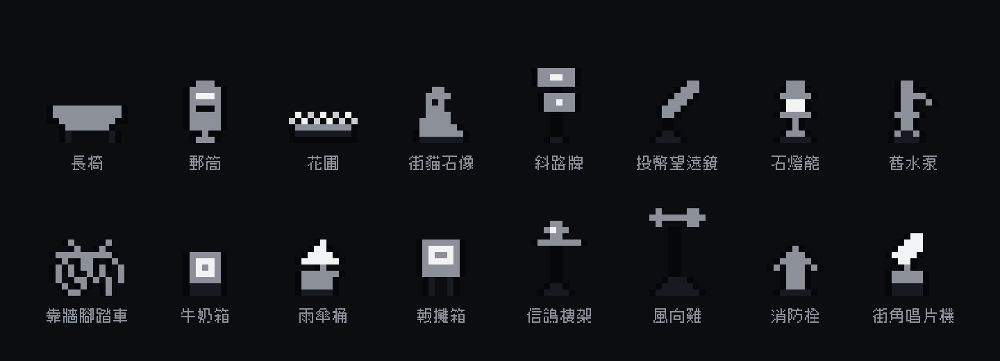
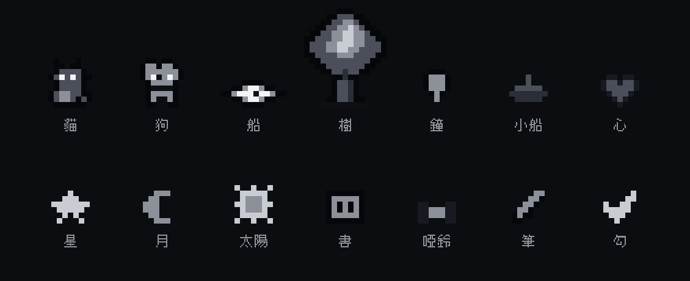
Trust
零伺服器的產品，最真實的威脅不是被駭，是 App 自己把使用者的字弄丟。它真的發生了。
問題：使用者寫好的內容不見了；因為 Obsidian 有同步，遠端的正本也被空白覆蓋。
根因：存檔前本來要先跟遠端比對。某次遠端回不了資料，程式把「沒讀到」當成「沒衝突」，整段檢查被跳過，直接覆寫。
修正：立下契約——讀不到就不准寫。所有存檔只走同一個守衛：覆寫前先留一份備份，寫完讀回來核對，有衝突就問使用者、不自己猜。最後用 12 個場景的測試，把這次事故永久釘死。
有一種情況 Tata 刻意不自己決定：同一頁在 Tata 和 Obsidian 兩邊都被改過——只有在電腦上和 Obsidian 共用同一份筆記的人會遇到。這時它不自動合併、也不挑一邊，而是問你：保留我的、用對方的，還是兩個都留。日記不適合自動合併，錯合併比衝突更傷。
iOS
iOS 版用原生外掛把字存進 App 的文件夾——在「檔案」App 裡看得到、可以自己備份、可以整包匯出。這裡遇到一個網頁上不會有的硬問題：iCloud 尚未下載的檔案在磁碟上只是一個佔位符，「讀不到」和「不存在」是兩件事。前一段那條規則，在新平台上又被考了一次——這次它擋住了。
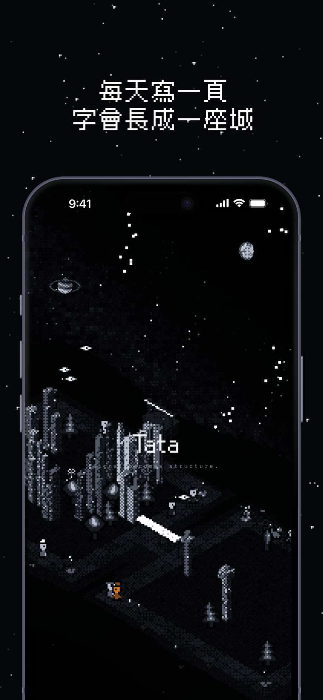
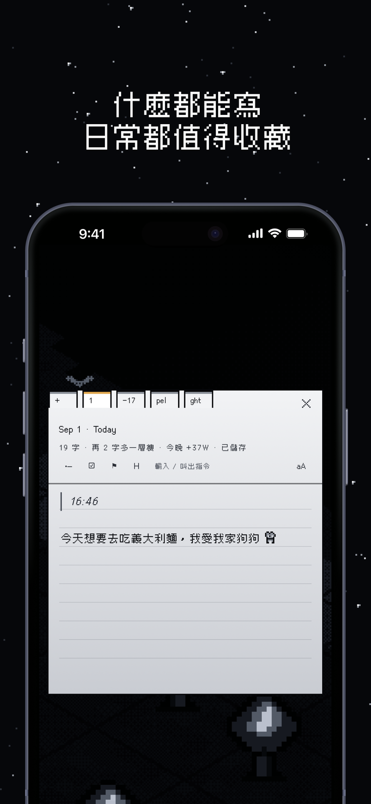
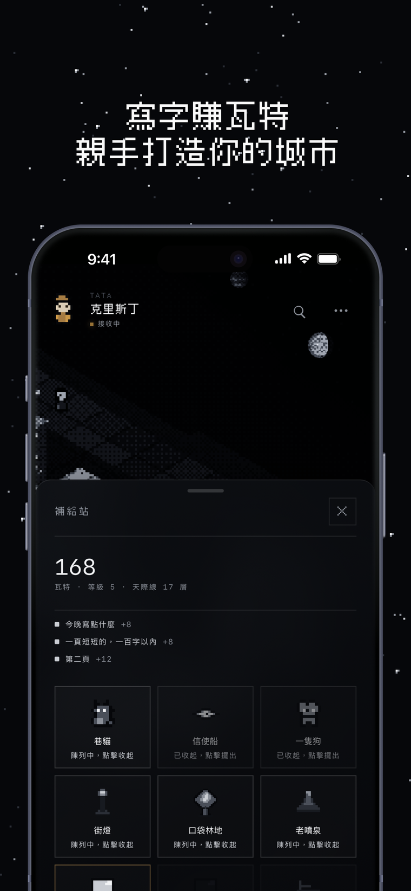
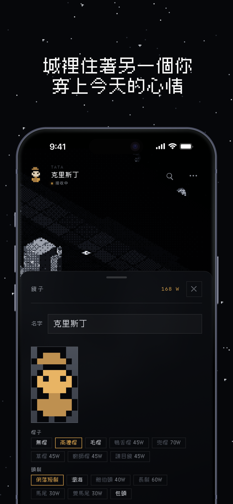
Reflection
做 MELU 時我學到「可信度要做進架構」；做 Tata 時這句話有了更重的份量——因為這次沒有伺服器可以幫我兜底。使用者的字只在他的裝置上，App 自己就是最後一道防線。
另一件事是關於克制。三個顏色、不放說明文、拆掉做好的禮物系統——每一次減法，產品的輪廓就清楚一點。三週半從第一行程式到送審，靠的不是做得多，而是很早就知道什麼不做。